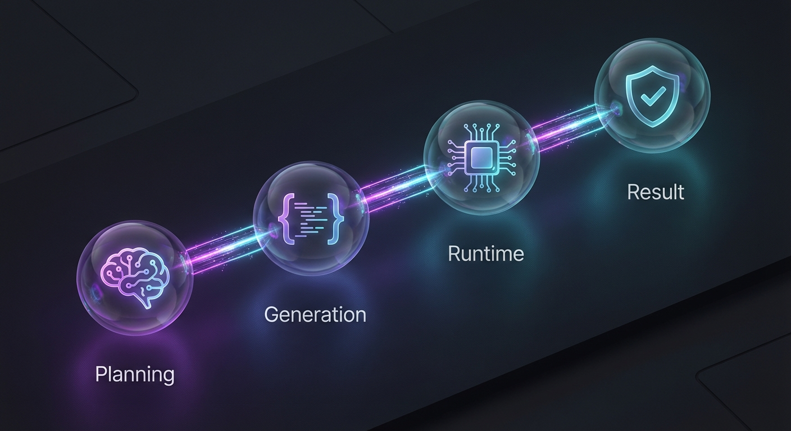

RunCode Task
Executes code snippets with human oversight. Handle automation, configure working directories, and capture detailed execution outputs with interactive review.
Try the SimulatorCore Capabilities
Versatile Runtimes
Support for internal JVM languages (Kotlin, Groovy) and external CLI tools (Python, Bash, Node.js).
Directory Config
Full control over the working directory path for file system operations and context.
Output Capture
Comprehensive capture of standard output, return values, and error streams for analysis.
Error Handling
Robust error reporting and stack trace analysis to facilitate debugging and auto-fixing.
User-in-the-Loop
Review and approve code before execution. You retain full control over operations on your machine.
Auto-Fix
Optional automated correction of code based on execution errors or feedback.
Supported Environments
Choose between integrated JVM execution or external process orchestration.
Internal JVM
High-performance execution within the agent's process. Ideal for data processing and logic.
- Kotlin
- Groovy
External Processes
Orchestrate installed tools and scripts available in your system's PATH.
- Bash / Shell
- PowerShell / Cmd
- Python
- Node.js
- Ruby / Perl / PHP
- Go / Rust / Scala
Task Simulator
// Code generated by the agent will appear here...
// Waiting for input...Execution Result
Execution Pipeline

Plan & Prompt
The system analyzes the user goal and constructs a prompt for the coding agent.
Code Generation
The LLM generates the necessary code (Kotlin/Groovy) to solve the problem.
Runtime Execution
Code is executed in the configured runtime environment with access to the working directory.
Result & Feedback
Output is captured. If errors occur, the Auto-Fix loop attempts to resolve them.
When to Use
Perfect for on-the-fly manipulation of datasets, file parsing, and format conversion tasks.
Automate repetitive file system operations, backups, or environment setup scripts.
Solve complex algorithmic problems that require computational accuracy beyond standard LLM capabilities.